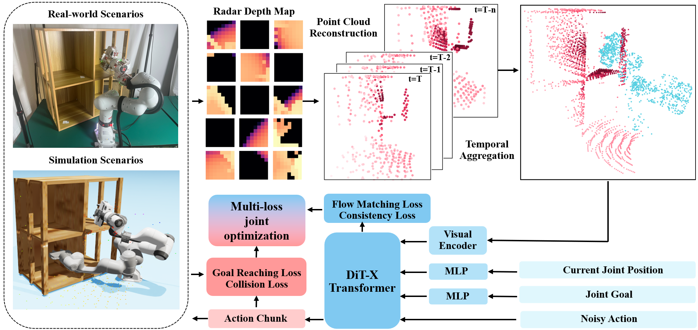
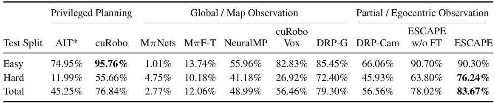

Motion planning in unstructured environments is a bottleneck for robot deployment. Current visuomotor policies predominantly rely on external cameras, introducing perceptual blind spots and fragility due to occlusions, clutter, and calibration constraints. To overcome these limitations, we propose ESCAPE, an online egocentric sensing framework for collision-free trajectory generation. ESCAPE aggregates sparse measurements from distributed depth sensors, converting them into a structured, obstacle-aware point cloud representation. Our policy leverages a flow matching-based generative framework, and trains on a high-quality dataset comprising over 100K safety-critical trajectories. With joint optimization of goal-reaching and collision objectives, it produces safe trajectories directly from these egocentric inputs. Crucially, ESCAPE is trained entirely in simulation and transfers zero-shot to physical hardware without any real-world fine-tuning. Extensive simulation and real-world evaluations demonstrate that ESCAPE achieves stable motion planning using only egocentric perception, outperforming external-view and voxelized-planning baselines across both simulation and real-world evaluations.

ESCAPE is an online flow-matching policy for safe motion generation in cluttered environments. First, distributed body-mounted depth measurements are temporally aggregated into a structured, collision-aware point cloud. Then, a DiT-X Transformer takes this egocentric representation, the joint goal, and the current joint position as inputs to generate action chunks. The framework is trained via multi-loss joint optimization to output safe trajectories.
Shelf_Hard
Microwave_Hard
Box_Hard
Cage_Hard
Cubby_Hard
Dishwasher_Hard
Wallcabinet_Hard
Success Rate

Shelf_Hard
Microwave
DRP
NeuralMP
cuRobo-Vox
Success Rate: ESCAPE 91.30% | DRP 71.74% | NeuralMP 8.70% | cuRobo-Voxels 47.83%
Microwave & Box
Microwave & Cage
Wallcabinet & Box